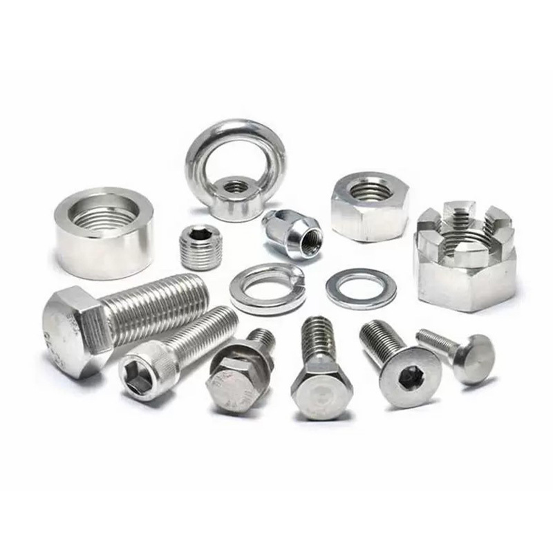
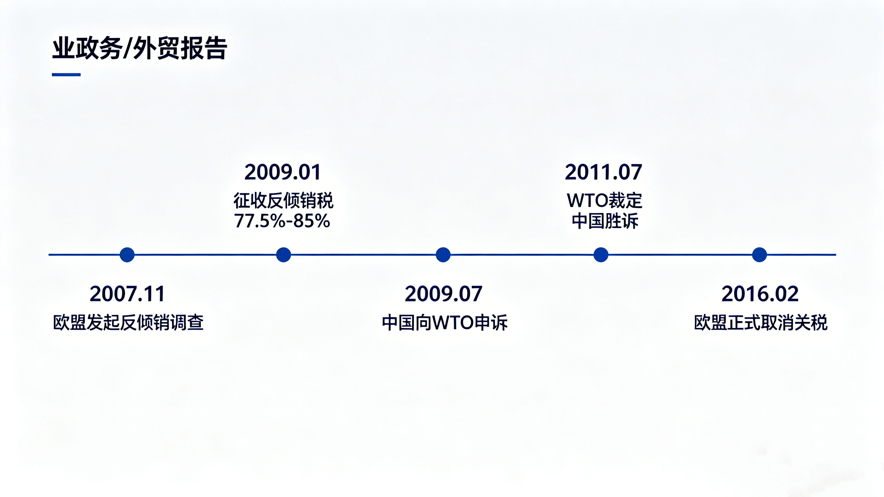
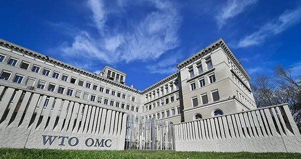

2007年11月9日，欧盟委员会正式宣布对原产于中华人民共和国的某些钢铁紧固件启动反倾销程序[引文:5]。该公告于同日在《欧盟官方公报》上发布，开启了当时中国出口商面临的最大规模反倾销案件[引文:1][引文:3]。

背景与申诉提交
此次调查是在欧洲工业紧固件协会（EIFI）提交申诉后启动的，该协会代表了欧盟某些钢铁紧固件总产量超过25%的份额[引文:5]。EIFI指控来自中国的相关产品存在倾销行为，从而对欧盟产业造成了实质性损害。
- 产品范围 木螺钉（不包括马车螺钉）、自攻螺钉、其他带头的螺钉和螺栓，以及垫圈，涵盖CN编码 7318 12 90, 7318 14 91, 7318 14 99, 7318 15 59, 7318 15 69, 7318 15 81, 7318 15 89, 7318 15 90, 7318 21 00, 和 7318 22 00[引文:5]。
- 调查期 2006年10月1日至2007年9月30日[引文:4]。
- 答复截止日期 出口商需在11月9日起15天内提交抽样信息和市场经济地位申请[引文:5]。
- 潜在关税 如果倾销被确认，关税可能高达87%[引文:8]。
此案规模空前。根据中国海关数据，调查期内中国对欧盟的钢铁紧固件出口额达到约8.09亿美元（5.75亿欧元），涉及中国各地超过1700家企业[引文:1][引文:2][引文:8]。主要紧固件制造基地宁波市，占其中近1亿美元的出口额，涉及当地100多家公司[引文:3][引文:9]。

对中国出口商的影响
中国当时是、现在仍然是全球最大的紧固件生产国。调查时，中国拥有超过1000家紧固件制造企业，仅宁波一地的销售额就占全国25%以上。该行业年收入超过100亿元人民币，有20多家公司年销售额超过1亿元人民币[引文:3][引文:9]。
对出口商的直接影响： 63%至87%的反倾销关税威胁笼罩着中国制造商[引文:8]。许多人担心不利裁决将使他们完全被排除在欧盟市场之外，而欧盟是仅次于北美市场的中国第二大紧固件市场[引文:9]。
以往的贸易行动： 这并非首次针对中国紧固件的此类行动。2004年，欧盟已对中国不锈钢紧固件征收了11.4%至27.4%的反倾销税[引文:3][引文:5]。加拿大也曾发起反倾销和反补贴合并调查，迫使中国出口商完全退出该市场[引文:9]。

中国的回应与辩护策略
为应对调查，中国机电产品进出口商会（CCCME）在宁波召开紧急协调会议，组织全行业进行辩护[引文:3][引文:9]。中国企业采取了两种主要的辩护策略：
- 行业集体辩护 参与联合“无损害”辩护，以证明中国进口产品未对欧盟生产商造成损害。
- 个别回应 包括宁波永宏紧固件制造有限公司和宁波金鼎紧固件有限公司在内的一些公司，聘请了自己的法律顾问，以寻求个别待遇和市场经济地位[引文:1][引文:9]。
截至2007年11月初，已有八家公司承诺自筹资金回应调查[引文:9]。宁波紧固件行业协会呼吁企业加强自律，避免可能助长倾销指控的恶性价格竞争[引文:9]。
中国出口商强烈质疑这些指控。嘉兴市紧固件进出口企业协会指出，根据欧盟委员会自己的分析，2003年至2007年间，欧洲制造商的利润率增长了110%，生产水平、销售量和就业情况也有类似改善，就业增长了12%[引文:8]。该协会副秘书长张峰表示：“无论我们如何仔细审视欧盟委员会的分析，我们都无法看出中国紧固件出口在哪些方面损害了欧洲制造商。”[引文:8]
争议与不公平待遇
两家欧洲在华子公司获得特殊豁免。 这两家公司——Agrati的中国子公司和Celo的中国子公司——获得了单独审查并最终被豁免关税，而所有其他中国出口商则面临禁止性关税[引文:8]。中国业界质疑，欧洲制造商一方面要求针对中国紧固件实施保护，另一方面却继续从其在华子公司免税进口，这种做法是否公平[引文:8]。
欧盟委员会选择印度作为替代国 来确定正常价值，中国出口商认为这一选择不当，因为中国和印度在生产成本和市场条件方面存在显著差异[引文:5]。
调查过程中涉嫌违反WTO规则。 中国后来辩称，欧盟未能遵守WTO关于倾销幅度计算、损害认定、因果关系分析和信息披露的规定[引文:2][引文:4]。
时间线与最终解决
- 2007年11月 调查启动[引文:4][引文:5]。
- 2009年1月 征收为期五年的最终反倾销税——回应公司的加权平均税率为77.5%，未回应公司的税率为85%[引文:1][引文:4]。
- 2009年7月31日 中国首次向WTO对欧盟提起争端解决申诉（DS397）[引文:2][引文:4]。
- 2011年7月 WTO上诉机构裁定中国胜诉，认定欧盟存在多项程序和实质性WTO违规行为[引文:10]。
- 2016年2月 欧盟正式取消对中国紧固件的反倾销税，距离征税已近七年[引文:10]。


此案成为中国运用WTO争端解决机制的一个里程碑。 它标志着中国首次在WTO挑战欧盟的反倾销措施并最终获胜，为非市场经济待遇和调查当局的义务确立了重要先例[引文:4][引文:10]。
然而，损害已经造成。 在关税实施期间，中国紧固件行业遭受了严重损失，许多小型出口商被完全挤出欧盟市场。即使在2016年关税取消后，该行业也已失去大量市场份额，并面临艰难的重振之路[引文:1][引文:10]。
对当今出口商的启示
2007-2016年欧盟紧固件案为面临贸易救济调查的中国出口商提供了持久的教训。首先，早期且积极的辩护——包括行业集体行动和个别法律代表——可以改善结果。其次，利用WTO争端解决机制虽然耗时，但最终可以推翻不公平的措施。第三，市场多元化对于减轻任何单一地区贸易壁垒的影响仍然至关重要。
WT Fasteners多年来一直密切关注此案及类似的贸易救济行动。 我们理解贸易壁垒给紧固件出口商带来的挑战，并始终致力于帮助客户应对复杂的国际贸易法规。对于目前面临反倾销调查或希望了解其市场准入选择的公司，我们建议尽快咨询合格的贸易法律顾问。
联系方式
- WhatsApp: +8613731044825
- Email: yielvin53@gmail.com
- Website: wtscrews.com
- Brand: WT Fasteners
如需产品详情或技术支持，请访问我们的网站或联系我们的团队。